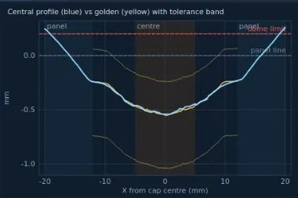

Lid shape, container by container
If the closure fails or air enters, the lid loses the deformation caused by the vacuum and its centre rises. The profilometer measures each lid on the conveyor and compares its shape with a learned reference of good lids: it also detects dents or a different lid.

Correct vacuum
Raised centre

Outside the reference

Printed batch
Reading or verification of the date and batch printed on the lid itself, without an additional camera.
3D view
Each lid is reconstructed in 3D from its profiles. Deformation is visible and compared with the learned reference of good lids.